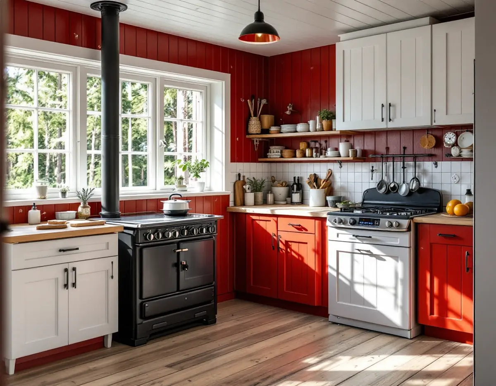
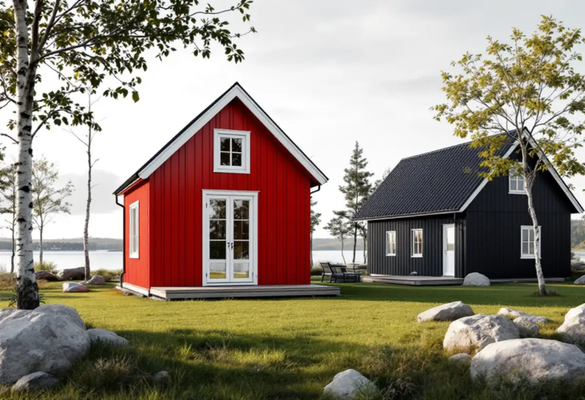

Platsbesök
Vi går igenom kök, spis, eldstad och vatten, och om köket ska användas året runt eller mest på sommaren.
Kommunen har drygt 26 000 fritidshus, och ungefär en fjärdedel av dem som använder husen vistas i kommunen större delen av året. Ett kök som byggdes för sommaren ska då fungera även när det är kallt, och har stugan en gasolspis eller en vedspis finns det regler för båda. Geal Entreprenad AB bygger om kök i fritidshus och villor i Norrtälje kommun, med gratis platsbesök, skriftligt kostnadsförslag och ROT-avdraget direkt på fakturan.

Myndigheten för civilt försvar, MCF, räknar villa, radhus och fritidshus till samma grupp när det gäller brandfarlig gas. I bostaden får man där hantera behållare som rymmer högst 30 liter, och myndigheten råder att man inte har mer hemma än man behöver, normalt en behållare som används och en i reserv. Ingen hantering bör ske på vinden.
Flaskan får stå i köket eller i ett köksskåp, men skåpet ska vara ventilerat direkt ut i rummet. MCF skriver att det vanligtvis krävs öppningar både högt och lågt i förvaringsutrymmet och att öppningarnas area ska motsvara en procent av utrymmets golvarea. Det måttet tar vi med när skåpet bredvid spisen ritas, så att ventilationsöppningarna inte hamnar bakom en sockel som stänger dem.
Slangen mellan flaskan och spisen är enligt MCF en vanlig orsak till olyckor. Den ska vara avsedd för gasol, sitta fast med slangklämma och kontrolleras inför varje säsong, och anläggningen ska täthetsprovas varje gång behållaren byts och minst vartannat år. Lågans inre del ska vara blågrön, och gula inslag betyder att brännaren behöver service. Gasol är ungefär 1,5 gånger tyngre än luft och kan därför först sjunka mot golvet vid en läcka.

Ska en vedspis installeras eller ändras väsentligt ska det anmälas till bygg- och miljönämnden, och arbetet får inte börja förrän startbesked har getts. Kommunen skriver att ett byte av eldstad i de flesta fall kräver anmälan. För att slippa måste den nya vara likvärdig i typ, storlek, effekt och anslutning till rökkanalen. Till anmälan hör situationsplan, planritning med eldstadens placering och fasadritning där skorstenen syns, och handläggningstiden är fyra veckor från att anmälan är komplett.
När vedspisen är i bruk gäller kommunens frister. En lokaleldstad som är den huvudsakliga värmekällan i rummet eller används för matlagning ska enligt kommunens tabell sotas varje år och brandskyddskontrolleras vart tredje år. Eldas den i mindre omfattning blir intervallen tre år för sotning och sex år för kontroll. Brandskyddskontrollen görs av Räddningstjänsten i Norrtälje kommun, som bland annat tittar på eldstad, skorsten, tak och närliggande byggnadsdelar.
Vid kontrollen ska rens- och inspektionsluckor gå att öppna, och räddningstjänsten ber att de inte blockeras. Därför planerar vi skåp och väggpaneler runt spisen så att luckorna går att nå. Taket ska ha godkända takskyddsanordningar hela vägen till skorstenen, se takrenovering i Norrtälje.
Den lovbefriade åtgärden attefallshus togs bort den 1 december 2025 och ersattes av bygglovsbefriad komplementbyggnad och komplementbostadshus. Utanför detaljplan får ett lovfritt komplementbostadshus enligt kommunen ha en byggnadsarea på högst 50 kvadratmeter och en taknockshöjd på högst 4,5 meter, och alla lovfria fristående byggnader på tomten får tillsammans vara högst 65 kvadratmeter. Inom detaljplan är gränserna 30 och 45 kvadratmeter och 4 meter.
Byggnaden ska ha mindre byggnadsarea än huset den kompletterar. Bygglov krävs ändå om den placeras närmare än 4,5 meter från gränsen utan grannens skriftliga medgivande, om området är särskilt värdefullt eller om den ligger inom ett riksintresse för totalförsvaret. Tidigare lovfria byggnader på tomten räknas in i ytan, även sådana som byggdes enligt de äldre reglerna.
Boverket påpekar att själva byggnaden ofta inte kräver anmälan, men att tekniska installationer som vatten, avlopp och ventilation gör det. Ett pentry med diskho i gäststugan kan alltså behöva anmälas även om stugan är lovfri. Ska köket i huvudbyggnaden bli större får en lovfri tillbyggnad vara högst 30 kvadratmeter och inte gå över den befintliga taknocken. Om stommen och virket läser du hos snickare i Norrtälje, och om köksplanering på sidan om köksrenovering.
Vi går igenom kök, spis, eldstad och vatten, och om köket ska användas året runt eller mest på sommaren.
Vi bedömer om eldstaden behöver anmälas och hur gasolflaskan ska stå.
Rivning, snickeri, VVS och el redovisas var för sig, med arbete och material åtskilda.
Gamla skåp tas bort, och vatten, avlopp och el dras om.
Stomme, ventilerat gasolskåp, bänkskiva och vitvaror monteras.
Vi provar spis, fläkt och blandare och går igenom köket med dig.
Ett fritidshus som du själv använder ger rätt till rotavdrag, men enligt Skatteverket inte om någon annan bor där permanent. Avdraget är 30 procent av arbetskostnaden, högst 50 000 kr per person och år och högst 75 000 kr tillsammans med rutavdrag.
I ett småhus räknas bland annat att montera fast köksinredning och installera vitvaror i samband med en omfattande renovering, att installera och reparera braskaminer och att installera avlopp och ventilation. Material och resor ger inget avdrag, och Geal drar avdraget direkt på fakturan.
Mycket handlar om vad som ska finnas kvar. Behålls gasolspisen eller vedspisen blir skåpen runt dem ett eget moment, och ska en ny eldstad in tillkommer anmälan och skorstensarbete. Avstånd och åtkomst, till exempel till en stuga på en ö, kan påverka hur material och avfall fraktas. Platsbesöket är gratis och du får ett skriftligt kostnadsförslag.
Planering, el, VVS, fläkt och väggar.
Köksrenovering i Stockholm →Takbyte, takbesiktning och plåtarbeten.
Takläggare i Norrtälje →Roslagen, skärgård och fritidshus.
Takrenovering i Norrtälje →Stugtomter, strandskydd och avlopp.
Attefallshus i Norrtälje →Fritidshus, WC-tillstånd och brunn.
Badrumsrenovering i Norrtälje →Nytt hus, förhandsbesked och egen brunn.
Byggföretag i Norrtälje →Ljust bostadshus och röda uthus.
Fasadmålning i Norrtälje →Bruksvillor, sommarvillor och Roslagens trähus.
Fasadrenovering i Norrtälje →Roslagens hus, bruksorter och bidrag i Norrtälje.
Fönsterbyte i Norrtälje →Gårdar, timmerhus och lösa innerbågar i Roslagen.
Fönsterrenovering i Norrtälje →Plankgolv i gamla gårdar och parstugor.
Golvläggare i Norrtälje →Från slipat eller lackat golv till skurgolv.
Golvslipning i Norrtälje →Trähus, fritidshus och kustlägen i Norrtälje.
Målare i Norrtälje →Takskydd, rännor och skorstensplåt i Norrtälje.
Plåtslagare i Norrtälje →Fritidshus, altan och gäststuga.
Snickare i Norrtälje →Kust, snö och Roslagens tak.
Takbyte i Norrtälje →Ny tapet i fritidshus och villor.
Tapetsering i Norrtälje →Tidigare tillbyggnader, strand och frivilligt lov.
Tillbyggnad i Norrtälje →